РЕСУРС ИЭНЕРГИЯ
Восстановление и поддержка уровня энергии, работоспособности и более ровного состояния в течение дня и полноценного отдыха.

Я - Александра Стонт, интегративный и клинический нутрициолог, психолог, телесно-ориентированный терапевт.
В основе моей работы - целостный взгляд на человека и взаимосвязь физиологии, питания, психологического состояния, образа жизни и повседневных привычек.
Мне важно, чтобы забота о себе становилась для человека естественной частью жизни и поддерживала его каждый день.
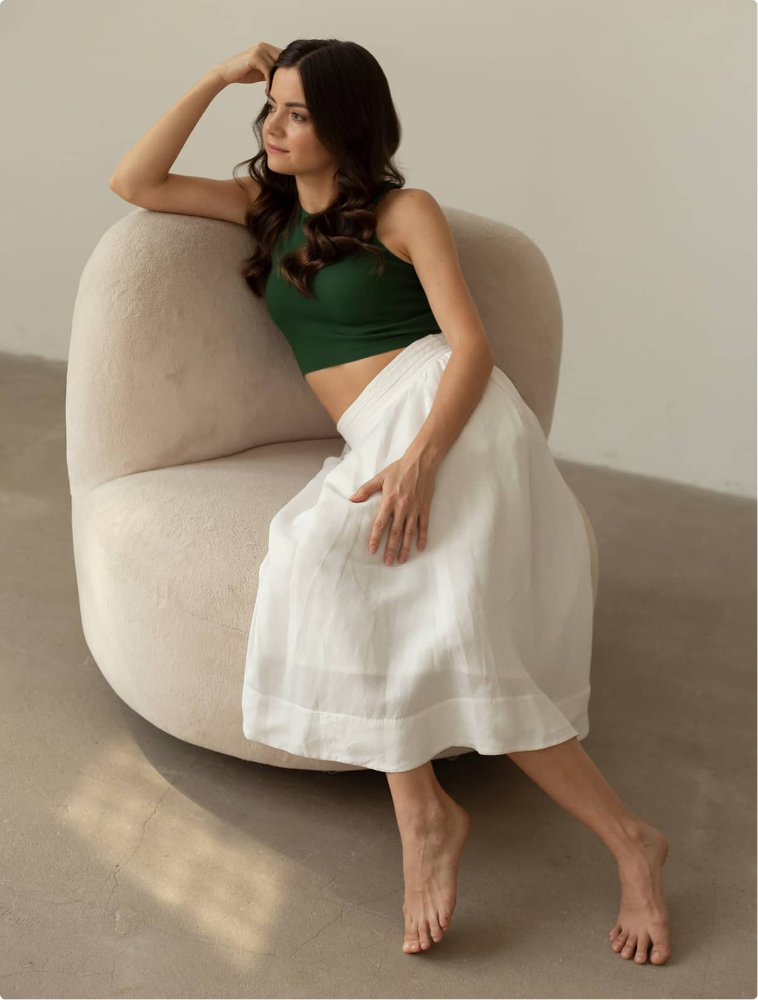
Много лет я работала в IT-менеджменте - в среде, где важно видеть систему целиком, находить взаимосвязи, выстраивать процессы и превращать сложное в понятную структуру.
Позже переезд в другую страну изменил мой привычный образ жизни: климат, питание, режим, нагрузку и ежедневные привычки. Этот период стал для меня точкой глубокого интереса к тому, как тело адаптируется к изменениям и из чего складывается наше самочувствие.
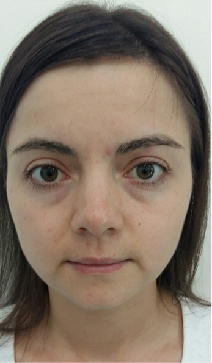
2019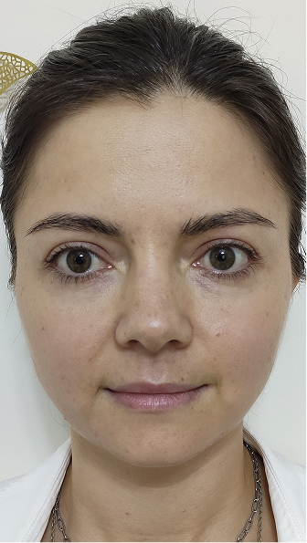
2020 2026
2026Я начала изучать физиологию, питание, восстановление и образ жизни - сначала для себя, а затем профессионально. Постепенно системное мышление и управленческий опыт соединились со знаниями о здоровье человека и практикой работы с людьми.
Так сформировалась основа подхода, который позже стал проектом VMERU.
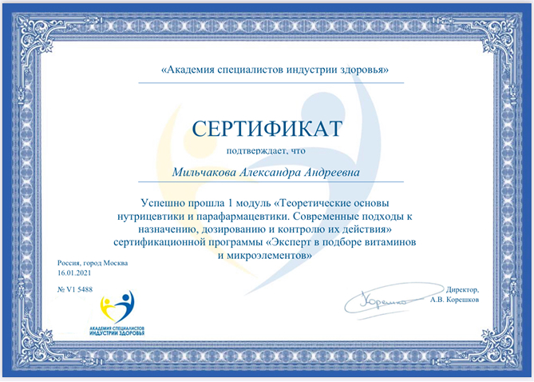
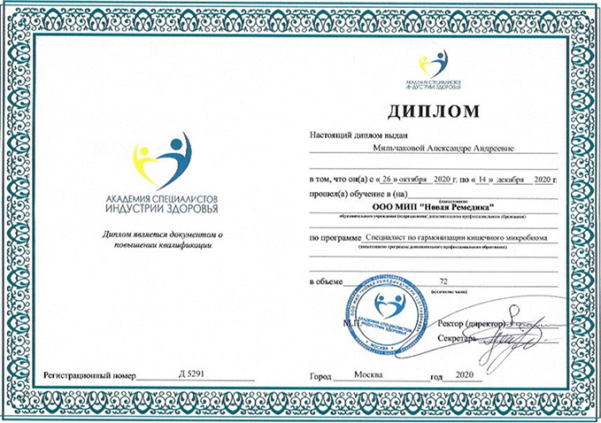
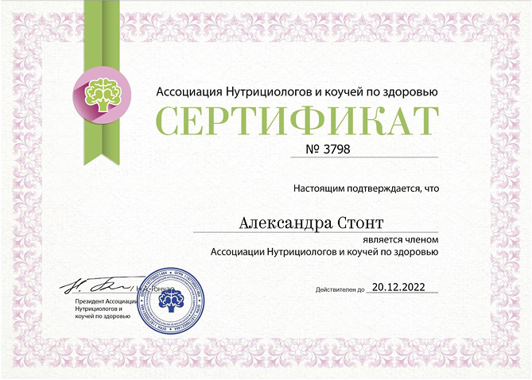
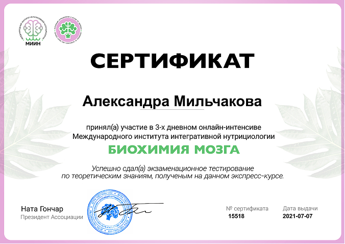
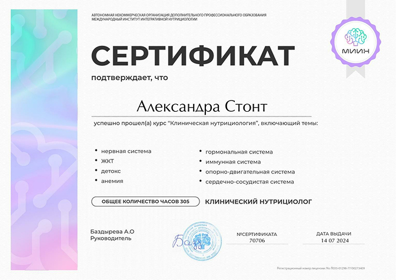
Здоровье складывается из множества взаимосвязанных процессов. В своей работе я собираю их в общую картину, нахожу взаимосвязи и помогаю выстраивать систему заботы о себе, которая поддерживает качество жизни.
Восстановление и поддержка уровня энергии, работоспособности и более ровного состояния в течение дня и полноценного отдыха.
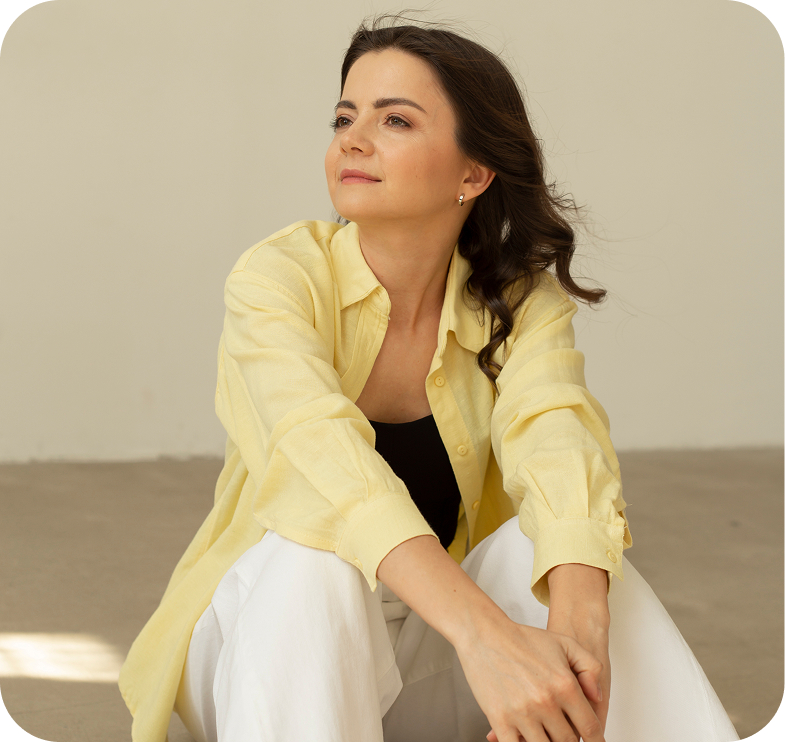
Поддержка пищеварения и комфортного состояния, выстраивание полноценного питания и нутритивного статуса.
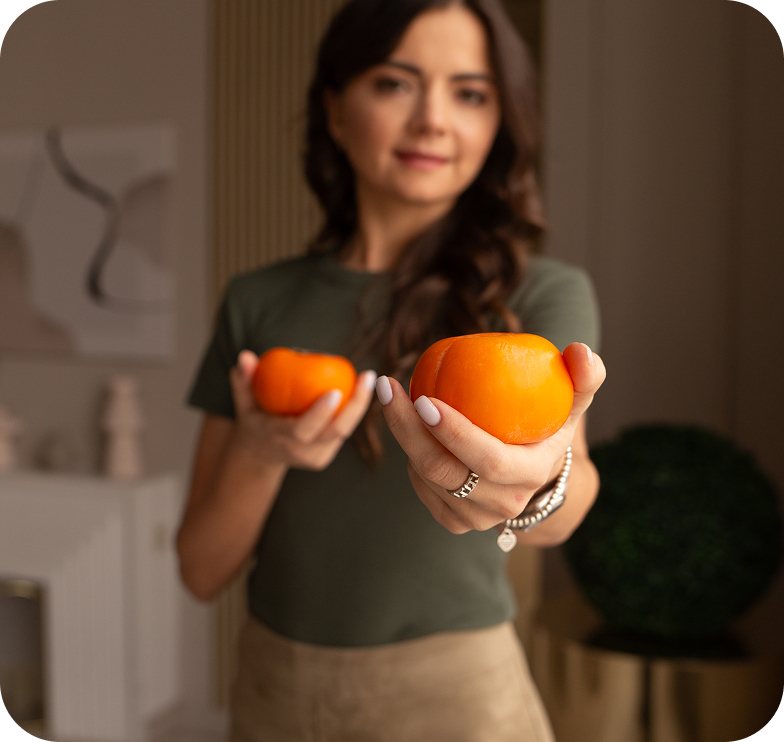
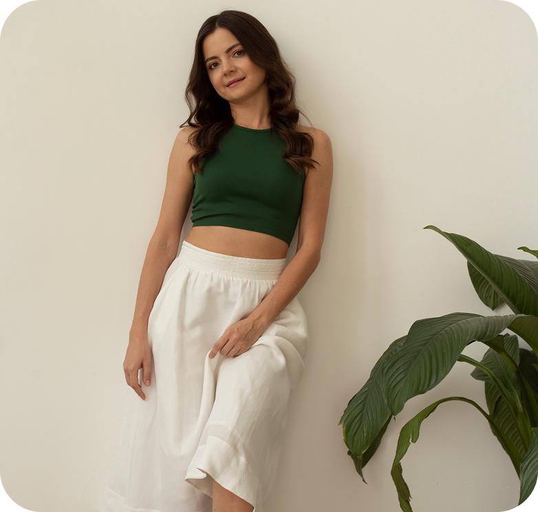
Работа с эмоциональной устойчивостью, качеством сна, внутренним состоянием и способностью организма восстанавливаться.
Выстраивание подходящего ритма, питания, движения, отдыха и повседневных привычек в целостную систему жизни.
VMERU - система работы
с ритмом, телом, состоянием
и ежедневным выбором.
Работа строится вокруг формирования устойчивых изменений, которые поддерживают человека в долгосрочной перспективе.

понимание себя
и своих процессов

выявление
взаимосвязей

маленькие устойчивые
изменения

встраивание
в повседневность

система начинает
работать на человека
Я верю, что здоровье раскрывается через внимание, последовательность и уважение к своему ритму
ФОРМАТЫ РАБОТЫ